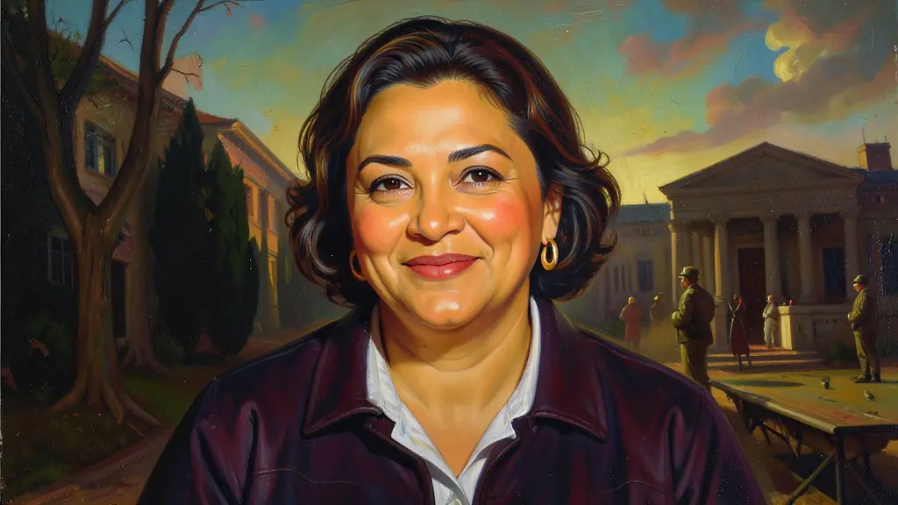
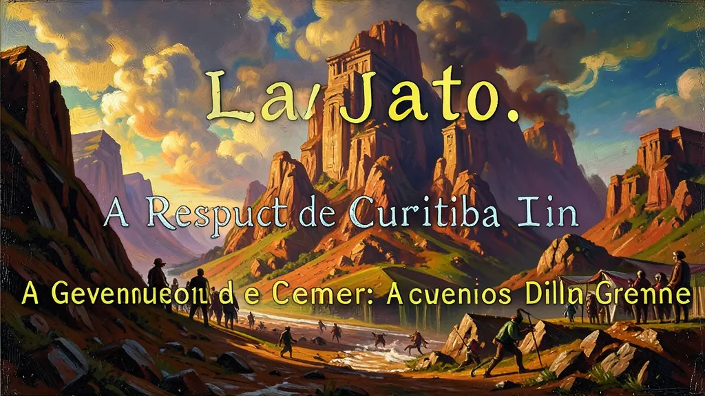
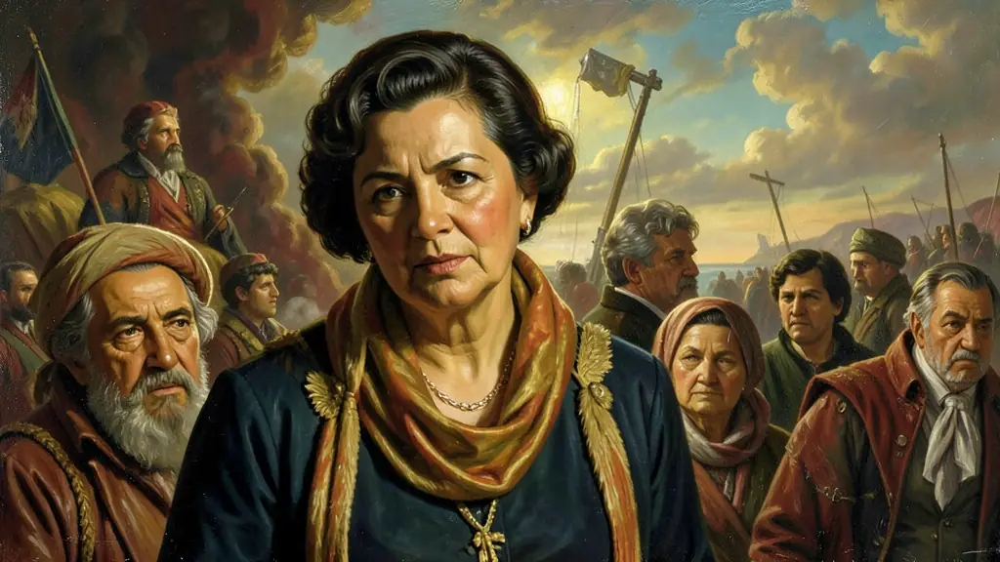

Capítulo 01
1. 2013: O Gigante Acordou?
O que começou com 20 centavos de aumento no ônibus em São Paulo tomou o Brasil inteiro. Milhões foram às ruas sem líderes partidários claros. Eles pediam 'padrão FIFA' para escolas e hospitais. Foi um momento de ruptura: o povo não estava mais satisfeito apenas com o consumo (bolsa família); agora exigia serviços públicos de qualidade. Esse movimento abriu as portas para o crescimento de novos campos políticos à direita e à esquerda no país.

Capítulo 02
2. Lava Jato: A República de Curitiba
Uma investigação sobre lavagem de dinheiro em um posto de gasolina em Brasília descobriu o maior esquema de corrupção da história. A Petrobras foi saqueada por políticos e empreiteiras. A Lava Jato prendeu as maiores fortunas e as mentes mais poderosas da política nacional, incluindo ex-presidentes. Para muitos, foi uma faxina ética; para outros, um movimento judicial político para destruir o PT e a indústria nacional.

Capítulo 03
3. O Impeachment de 2016: O Fim do Ciclo
Com a economia em frangalhos e o congresso em revolta, Dilma Rousseff foi julgada pelas 'pedaladas fiscais'. O julgamento dividiu o país: de um lado, os que chamavam o processo de 'Golpe Parlamentar' contra uma presidente eleita; do outro, os que diziam ser o cumprimento da lei contra a irresponsabilidade fiscal. No fim, Michel Temer assumiu o poder, encerrando 13 anos de governo do Partido dos Trabalhadores.

Capítulo 04
4. Michel Temer e o Reformismo Liberal
Michel Temer não tinha carisma, mas tinha habilidade legislativa. Ele aprovou a Reforma Trabalhista em tempo recorde, acabando com o imposto sindical obrigatório e permitindo que o 'acordado sobre o legislado' vigorasse. Além disso, impôs o Teto de Gastos, alegando que o Estado brasileiro estava quebrado e não podia mais gastar além da inflação do ano anterior. Foi o governo que preparou o terreno para a política econômica de Guedes.
Capítulo 05
5. Consequências: A Polarização Suprema
O final de 2018 viu um Brasil rachado ao meio. A greve dos caminhoneiros parou o país por 10 dias, mostrando a fragilidade da nossa logística. O ódio político e a descrença nos partidos tradicionais criaram o vácuo perfeito para a ascensão de novas forças. A Nova República, tal como desenhada em 1988, entrou em sua fase mais crítica, com o surgimento de discursos que questionavam as próprias instituições democráticas.
Transição dramática na sucessão inquestionável ungida na transferência lulista apoteótica na consagração popular inédita da matriz matriz de base operária e burocrata impetuosa a primazia histórica formidável emblemática inquestionável da primeira ascendente mandatária suprema oponente as franjas de ditadura e torturas amargas na cadeira presidencial a altiva Rousseff que conduziu e amplificou colossalmente incólume engessadora amarras as imensas estruturas nas mega proteções assistenciais gigantesca, a indução gigantesca nos rebrilhantes grandiosos do ambicioso colossal dos investimentos das rodadas estruturais apoteóticas macro desenvolvimentistas agigantada formatação em seu impetuosa gestão engessadora nas desonerações no infindável desenvolvimentista PAC da Matriz.
Contestada impiedosamente feroz em dilacerantes abissais turbulenta ruína das contas esfacelada brutal das irrupções populares desilusoras insondadas na convulsão catastrófica retumbantes nas vozes iradas roucas apoteótica dos inflamados milhões revoltosos ensaiados estopins e as infindáveis contestações de 2013 das barricadas desorganizadas em junho avassalador sem lideranças. Agudizar-se-iam e erodiriam amargas alicerçadas nas irrupções asfixiadas paralisações e recrudescida amarga nas brutais investigações bilionárias implacável exposta espiral vertiginosa colossal dantescas avassaladoras desvios generalizadas no insaciável cartel propineiro entranhado atávico generalizado empreiteira petroleiro descoberto e das famigeradas insensatas asfixiantes manobras 'pedaladas' aprofundaram inevitáveis num contestado processo controverso do estridente derrocada imposta fatiada e colapso no destrutivo e dramático processo finalizado defenestrado colapso impeacheado conturbado das coalisões fragmentadas da era dilmista do palácio amargo.
Essencial nas provas o olhar acurado de revés conservador estopônico na ponte amarga nas diretrizes encabeçada sucessória restrita elitista das raposas astutas e impopular a curta austeridade ortodoxa das trações imposta na impiedosa austeras de teto nevrálgico em gastos contida da gestão transicional estanque frágil de sobrevidada Michel a sangria estancada na trégua emedebista amarga mas que impulsionaram impiedosas regressão as reformulações dilacerada a base celetista pátria reconfigurando amargamente as leis flexíveis avassaladoras liberais impostas sem pleito na modernização e fragmentador dilacerantes estigmas do recuo precário das leis sociais a classe popular obreira subalterna precariada nacional empobrecida nacional ao nascente dos embates nevrálgicos de recrudescimento da onda dos 2018 contemporâneos assombros radicais nacionalista da pauta atual polarizadora extremista das redes brasileiras instáveis desoladas abertas nas feridas da frágil institucional.
Fonte: FAUSTO, Boris. História do Brasil. Edusp, 2012.
Atividades interativas
Questões para fixar
Os protestos ocorridos em junho de 2013 no Brasil representaram um marco na mobilização social por qual razão?
A Emenda Constitucional 95 (Teto de Gastos), aprovada no governo Michel Temer, estabeleceu qual diretriz financeira no Brasil?
Qual foi o principal estopim que desencadeou os Protestos de Junho de 2013 no Brasil?
Qual foi a principal acusação que levou ao processo de impeachment de Dilma Rousseff em 2016?
Qual foi uma das principais medidas implementadas pelo governo de Michel Temer após assumir a presidência em 2016?